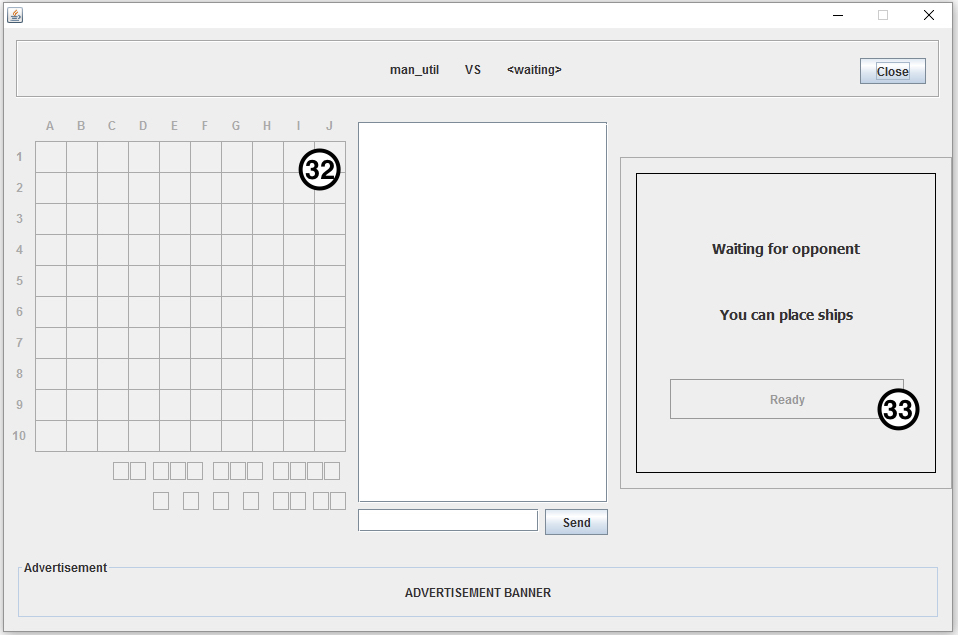

Bem vindo ao Manual de Utilizador do BaShip, aqui encontrará os passos detalhados de todas as funcionalidades do jogo com imagens ilustrativas.
Indice:
Para realizar o registo/login é necessário preencher, em ambos os casos, o campo 1 com o nome de utilizador desejado e de seguida o campo 2 com a palavra passe desejada, constituída obrigatoriamente por letras e números, com tamanho mínimo de 6 caracteres.
Caso já tenha efetuado um registo anteriormente, após preencher os campos 1 e 2, apenas terá de clicar no botão indicado com o número 4, “Login”.
Caso seja a primeira utilização será necessário, em primeiro lugar, efectuar o registo. Para isso, após preencher os campos 1 e 2, terá de clicar no botão indicado com o número 3, “Register”, e de seguida reescrever a palavra passe na nova janela no campo indicado com o número 6.
De seguida, após clicar no botão indicado com o número 7, caso as palavras passe coincidam, o login será automaticamente efetuado, caso contrário, terá de reescrever a palavras passe no campo indicado com o número 6.
Para aceder às Definições do jogo basta clicar no botão indicado com o número 5, que abrirá a interface apresentada na imagem a seguir.
Nesta interface pode Ligar/Desligar os efeitos sonoros do jogo ao clicar na caixa de “sound” indicada com o número 8 . Na caixa “Dark theme” indicada com o número 9 poderá alterar o aspeto do jogo entre um tema escuro ou claro.
Para mudar o servidor ao qual está conectado, basta introduzir na caixa de texto com o número 10 o nome do servidor, e na caixa de texto número 11 o número da porta.
O botão 12 testa a ligação ao servidor, para saber se esta está correta, e válida. E finalmente, para gravar as alterações submetidas nas definições basta clicar no botão número 13. Para regressar à interface anterior basta clicar no botão número 14.
Nesta interface poderá consultar uma lista de todos os jogadores registados no servidor, as suas estatísticas de jogo e se estão online, offline ou a jogar. Pode atualizar esta lista clicando no botão número 15.
Poderá iniciar um jogo com um oponente aleatório que esteja ligado ao servidor ao clicar no botão número 16.
Poderá também iniciar um jogo com um dos jogadores que estão online clicando duas vezes no nome do adversário pretendido para o desafio, ou ser convidado por outro jogador.
Caso queira passar para outra página com da lista apresentada poderá fazê-lo clicando nas caixas com os números 17 e 18, caso queira ir para uma página a frente ou atrás, respectivamente.
Clicando na barra de texto indicada com o número 19 poderá filtrar os jogadores que se encontram na lista, escrevendo o nome do jogador em causa na caixa de texto e de seguida clicar no botão 20. Caso queira cancelar a pesquisa poderá clicar no botão indicado com o número 21.
Caso queira alternar para outra das janelas disponíveis, Games e Global Chat, poderá fazê-lo clicando nos botões 22 ou 23, respectivamente.
Se a qualquer momento quiser abandonar o jogo poderá fazê-lo clicando no botão Logout indicado com o número 24.
A principal diferença nesta interface é a existência do botão 25 que permite ao utilizador filtrar o tipo de jogos que quer ver: todos os jogos anteriormente inicializados ou apenas aqueles que estão a ser disputados no momento.
Caso o utilizador pretenda fazer espectate a um jogo precisará apenas de clicar duas vezes em cima do jogo que está a decorrer.
Os botões com os números 15,16,17,18,19,20,21 e 24 também presentes na interface anterior (lobby_players) encontram-se também funcionais nesta interface.
Caso o utilizador pretenda alternar para outra das janelas disponíveis, Players e Global Chat, poderá fazê-lo clicando nos botões 26 ou 27, respectivamente.
Nesta interface o utilizador poderá comunicar com qualquer outro jogador que se encontre online. Poderá fazê-lo escrevendo a mensagem em causa na caixa de texto com o número 28 e, de seguida, clicando no botão número 29 o utilizador poderá finalizar o envio da mesma.
Os botões com os números 15,16,20 também presentes nas interfaces anteriores (lobby_players e lobby_games) encontram-se também funcionais nesta interface.
O utilizador poderá sempre alterar a janela em que se encontra, escolhendo a qual das restantes pretende aceder, clicando nos botões 30 ou 31, que corresponde a Players e Games respetivamente.
A primeira coisa a fazer nesta é interface é colocar os navios no próprio mapa, indicado com o número 32, para tal, o utilizador tem de clicar em cada posição pretendida até obter todas as combinações necessárias (1 navio de tamanho 4, 2 navios de tamanho 3, 3 navios de tamanho 2 e, por fim, 4 navios de tamanho 1).
De seguida, caso o oponente já esteja pronto para jogar, o utilizador pode clicar no botão 33 para dar início ao jogo.

Caso seja a sua vez de jogar, poderá tentar adivinhar a localização dos navios do oponente, clicando uma vez numa das posições do mapa indicado com o número 34.
Caso o utilizador pretenda pode comunicar com o seu oponente poderá fazê-lo escrevendo a mensagem em causa na caixa de texto com o número 35 e, de seguida, clicando no botão número 36 o utilizador poderá finalizar o envio da mesma ou então, necessita apenas de pressionar a tecla enter.
No caso de o utilizador pretender abandonar o jogo em curso poderá fazê-lo utilizando para tal o botão com o número 37.
No final do jogo, caso este chegue ao fim, aparecerá uma janela nova que indicará se o jogador foi o vencedor ou se este perdeu o jogo. Clicando de seguida no botão com o número 38, o jogador voltará novamente ao Lobby.
Depois destes passos todos, está pronto para conseguir percorrer todas as interfaces do jogo, com confiança para desafiar o oponente e ganhar o jogo!